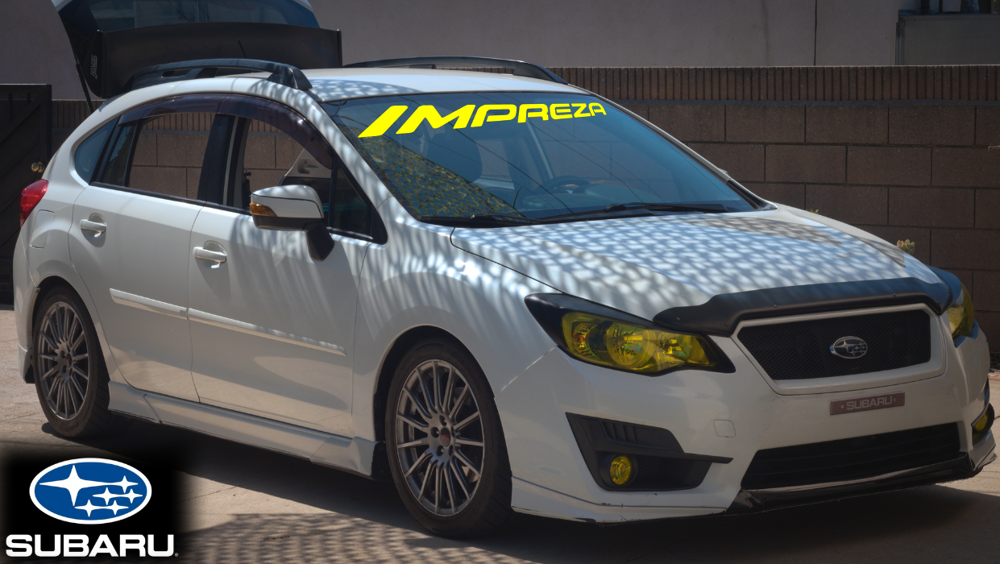

Piloting the FB20 and CVT - Techniques with Jeisun 🌴✌️
TLDR: Here are some techniques on getting the most performance out of the little FB20 engine and TR580 CVT.

2016 Subaru Impreza Sport CVT - Somewhere, Southern California USA
Now I know car enthusiasts are quite divided. Those who own manuals swear it's the better way to drive. I don't
disagree. But the fact is that many more of these cars came with CVTs. The vast majority of CVT owners typically
will not ever drive their cars flat out. So for those people, I applaud your self control. Now on to some CVT
techniques.
Brake stand/stall
This isn't a CVT only trick but one that can be applied to any auto-tragic
transmission. It basically allows the driver to "launch" the car. Being as these cars are AWD and with a
torque converter, you can use this to your advantage. Begin fully stopped with your foot on the brake. Apply
slight throttle bringing RPMs above idle while standing on the brake. When it's time to launch, left off the
brake and accelerate away. It's not as nice as a full clutch dump, but will surely start the car rolling
faster than normal. Useful at the beginning of an autocross run or perhaps at a traffic light 🙂
Manual mode
CVT have been known to have a very rubber band feeling, I don't disagree. This is one
main point why people dislike the CVT. Yes it's more fuel efficient, but it's slow to shift and difficult to
control the engine and it's connection to the wheels. Using manual mode will allow the driver to control the
car's RPMs much more precisely and thus control the wheel speed and torque delivery to the wheels. When in
doubt, manual mode and send it.
Engine braking
This can be used by both manual and CVT drivers. Downshifting allows the driver to control the wheel
speed and potential energy stored in the crank shaft. With the CVT you will not need to worry about over
reving the engine. The TCU (transmission control unit) will handle over revving by locking you out of any
gear that will take RPMs above 6000 (double beep). Control the vehicles speed with only engine braking. More
gradual stops, saves brake pads, and combined with disc brakes, it has an additive effect to help slow the
car faster.
Disable VDC
(Vehicle Dynamics Control) aka poor man's sport mode. This feature is available in both manual and CVT,
though I do not know the full effects on manuals. The good news is that by disabling VDC (button press and
not pulling any fuses) you still get the traction control. What does pressing the VDC button do? For one, it
allows the wheels to slip a little bit more before engaging ABS to correct wheel spin. This is good for
tight corners or dirt/rain/snow "drifting". The second benefit (with the CVT) is it allows the driver to
take the engine past 6000rpms. With VDC on (default) you will automatically shift if the RPMs reach 6000.
With VDC off, you get an extra 200 or so RPMs to play with at the top. 6232rpms is what I have recorded.
Note the FB20B makes its peak HP at 6200rpms. Disabling VDC enables more control of the cars rotation and
engine before the safety nanny kicks in.
CVT surge
This is one of my favorite things about the CVT. I am sure a manual transmission has something similar,
though I don't know what that's called. Any way, the CVT surge takes advantage of high RPMs and auto up
shifts producing a powerful torque surge. How it works. (Side by side) Match speed with any car, downshift
to bring RPMs into/close to upper ranges close to 5800+6000rpms. This is the part where I lose most people
because most CVT drivers aren't use to hearing the whining of a full loaded CVT at 6000+ RPMs. But this is
essentially where the performance advantage is. Continue to step on the gas and accelerate and let the CVT
automatically upshift. Once the engine hits 6000 (or 6200 with VDC off) you will be utilizing max HP and the
CVT will automatically upshift (lowering RPMs but with the accelerator floored) , it will bring the engine
into max Torque (4200rpm for FB20B). This creates a very smooth torque surge. The car will feel like a
rolling launch. I use this quite frequently when passing people in traffic. It can be used multiple times
surging then downshifting again to bring the RPMs back up, ready to surge again. This is best used between
45-75mph, though it can be used at higher or lower speed, just with less effect.
Disclaimer
I am not responsible for broken CVTs and broken solenoids. Have a good working engine (oil topped off), a
healthy transmission (CVT fluid is serviced) and a well maintained car (suspension, brakes and tires). That's it.
Now quit feeling like you need to save your engine and transmission. It's designed to take a beating. The CVT will
literally stop you when the fluid gets too hot (limp mode, max RPM 4000). That's when you know to cool off. Enjoy
your CVT (and manuals) I can't get enough of my econo box Impreza.
Back to Subaru Impreza Tuner